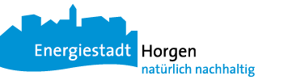

Die Mappe enthält verschiedene Broschüren zum Thema energieeffizientes Bauen und erneuerbare Energien. Dies ist die digitale Version. Eine papierene Form können Sie jederzeit kostenlos unter energie@horgen.ch bzw. 044 728 44 60 bestellen. Da die Bauherrenmappen jedoch umfangreich sind, können wir Ihnen diese nicht per Post zustellen. Wir danken für Ihr Verständnis und freuen uns auf Ihren Besuch beim Umweltamt (Büro 530).
Themen
Heizung • Minergie • Wasser • Neubauten • Sanierungen • Sanierungen • Horgen/Förderprogramme
| Titel |
Datei |
Quelle |
| Heizung: |
| 1. |
Die Beste Heizung für Ihr HausDieses Merkblatt hilft dabei, aus einer Vielzahl von Heizsystemen mit unterschiedlichen Energiequellen auszuwählen und diese zu vergleichen. |
|
EnFK1, EnergieSchweiz2 |
| 2. |
Solarwärme für EigenheimeDiese Info-Broschüre erklärt die Funktionsweise einer Solaranlage und zeigt die verschiedenen Möglichkeiten für den Einsatz von Solarwärme. Ein Kapitel beschäftigt sich mit den Kosten. |
|
Swissolar3 |
| 3. |
Die WärmepumpenheizungDiese Broschüre erklärt wie aus Umweltwärme Heizwärme wird und zeigt die Vorteile einer Wärmepumpe auf. |
|
BFE4 |
| 4. |
Wärmepumpen – Häufig gestellte FragenAntworten für Laien und Interessierte über Wärmepumpen und deren Anwendungen. |
|
BFE4 |
| 5. |
Komfortabler Wohnen – alles rund ums Heizen und LüftenAuf was muss beim Heizen und Lüften geachtet werden und was können Hauseigentümerinnen und -eigentümer tun. |
|
EnFK1, EnergieSchweiz2 |
| Minergie: |
| 1. |
Besser bauen, besser lebenÜbersichts-Broschüre zum Minergie-Label für die Bauherrschaft. |
|
Minergie5 |
| Wasser: |
| 1. |
Wasser erwärmen mit Köpfchen – alles rund um warmes Wasser im HausDie Broschüre zeigt auf, auf was Sie bei einem Neubau oder bei einer Sanierung achten sollten – und was Sie als Bewohnerin bzw. Bewohner machen können. |
|
EnFK1, EnergieSchweiz2 |
| 2. |
Saubere Wäsche mit Gewinn – alles rund ums Waschen und TrocknenAlles rund um die sparsame Waschmaschine und ums sinnvolle Wäschetrocknen. |
|
EnFK1, EnergieSchweiz2 |
| 3. |
Wasserspass mit Körper, Geist und KlimaHinweise fürs Wassersparen ohne Komforteinbusse. |
|
EnergieSchweiz2 |
| Neubauten: |
| 1. |
Neubauten mit tiefem EnergieverbrauchWie mit gezielten Massnahmen der Energieverbrauch im Neubau minimiert wird und die Bauqualität steigt. |
|
EnFK1, EnergieSchweiz2 |
| Sanierungen: |
| 1. |
Gebäude erneuern – Energieverbrauch halbierenWie mit gezielten Massnahmen der Energieverbrauch im Gebäude auf die Hälfte reduziert wird. |
|
EnFK1, EnergieSchweiz2 |
| 2. |
Das GebäudeprogrammSanieren und profitieren. Kurzanleitung zum Gebäudeprogramm. |
|
Das Gebäudeprogramm6 |
| Horgen: Dokumente |
| 1. |
Gutschein für Erstberatung EnergieFlyer für den Horgner Energiegutschein. |
|
Horgen7 |
| 2. |
Bestellung Horgner NaturstromDie Gemeinde Horgen produziert zwei eigene Naturstromprodukte und kauft ein weiteres ein. So können Sie einen Teil oder sogar Ihren ganzen Stromverbrauch mit 100 % erneuerbarer Energie abdecken. |
|
GWH8 |
| 3. |
Förderprogramm Kanton ZHFörderbeiträge für wärmetechnische Gebäudesanierungen und die Butzung erneuerbarer Energie und Abwärme |
|
Kanton Zürich9 |
| 4. |
Förderprogramm Horgen – ReglementAusführungsreglement zum Förderprogramm der Gemeinde Horgen zur CO2-Reduktion von Bauten und Anlagen |
|
Horgen7 |
| 5. |
Förderprogramm Horgen – GesuchsformularGesuchsformular inkl. Beiblatt
für das Förderprogramm. |
|
Horgen7 |
| 6. |
GEAK® – Gebäudeenergieausweis der KantoneDas wichtigste zum GEAK in Kürze. |
|
EnFK1 |
| 7. |
Weiterführende LinksWeiterführende Links. |
|
Horgen7 |

Quellen
1 Konferenz kantonaler Energiefachstellen: http://www.endk.ch/enfk.html
2 EnergieSchweiz: http://www.energieschweiz.ch/
3 Swissolar – Schweizerischer Fachverband für Sonnenenergie: http://www.swissolar.ch/
4 Bundesamt für Energie: http://www.bfe.admin.ch/
5 Minergie: http://www.minergie.ch/
6 Das Gebäudeprogramm: http://www.dasgebaeudeprogramm.ch/
7 Gemeinde Horgen: http://www.horgen.ch/
8 Gemeindewerke Horgen: http://www.horgen.ch/
9 Kanton Zürich: http://www.energie.zh.ch/subvention